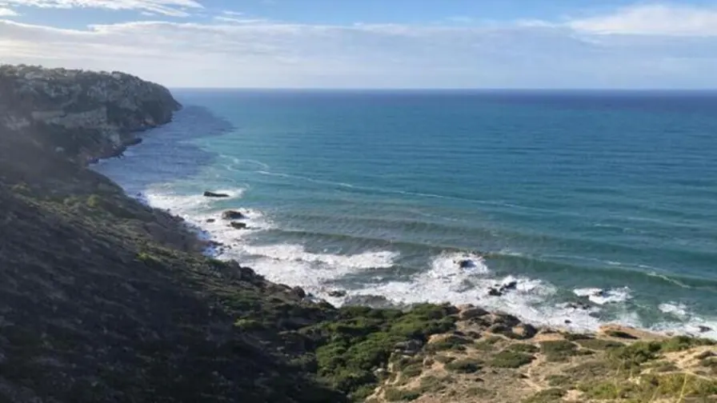
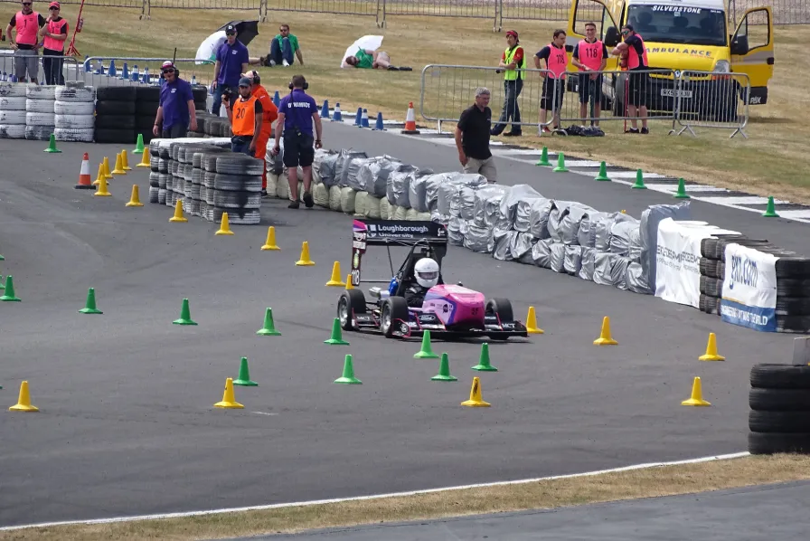
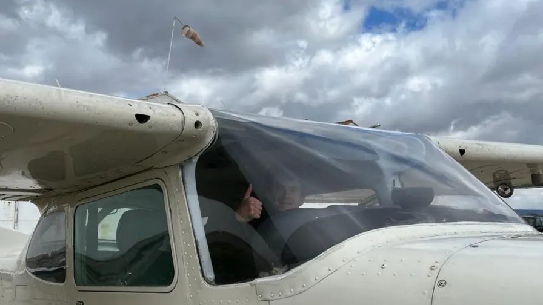
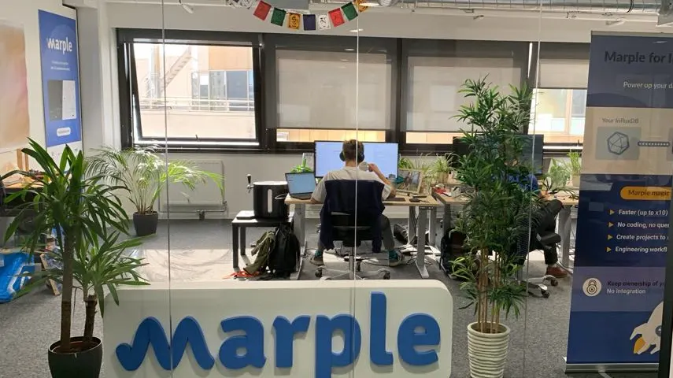
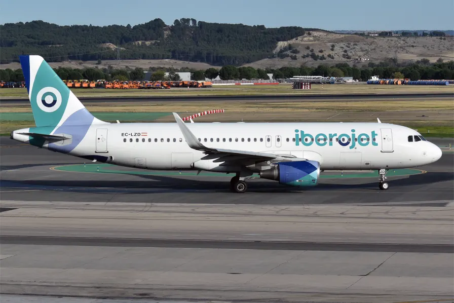

Hi, i'm Carlos
Been around five lustra and hours (yes, that hour counter updates!)
I was born in Barcelona, grew up in Mallorca, moved to the UK, moved back to Mallorca and then Madrid.

Spain
Grew up in Mallorca
I was born in Barcelona, then moved to Mallorca when I was around four. I didn't enjoy it in the beginning, but it keeps getting better every time I visit as an adult.
Spain
Always been around planes
I grew up around aviation through family and friends. It's pretty much the first passion or interest I remember.
Spain
Mallorca + Planes = pretty cool stuff
This is an ultralight flight along Mallorca's East coast.

UK
The fast life in UK
I moved to the UK at age 15, got deeper into software and engineering and in university joined Formula Student and wrote my final year thesis with the team.
UK
The slow life in UK
The UK was not just work and projects. It was also friends, long walks, pubs, and a good amount of figuring things out. Y'ell'be'right UK! (read with Norfolk accent).

Spain
The CPL chapter.
After university, I moved back to Spain and started working through my Commercial Pilot License theory exams, COVID-19 again made things pretty slow on that front.
Spain
Finishing exams + end of COVID = sport!
Going back to 'normal' life was great. I started dating (now getting married even)... (hi Lily!) and starting doing some sport. Instead of getting great at one, I was mediocre at three.
Spain
Time to get some flight hours
Around that time I also started ramping up the actual flying (actual license = theory exams + flying hours). I have many stories and thoughts on flight schools - mostly negative. Hit me up to hear them!

Spain
Engineering + Planes = Marple
I work at Marple we build engineering software for data storage and analysis. A lot of it is for flight testing or propulsion R&D, which is incredibly cool.
Spain
Side flying to get some hours
I still fly when I can (or when I bother people enough to let me jump around with them). An example of the two above: this is an Eclipse 500 (who, by the way went bankrupt.. cool story) on a flight from Spain to Morocco.

Spain
Airline training/h2>
Currently, I'm a Flight Student (what we call a "un fly" in Spain) at Iberojet/Evelop. A ACMI charter airline. I get to join the flight deck crew and learn/refresh systems and procedures.